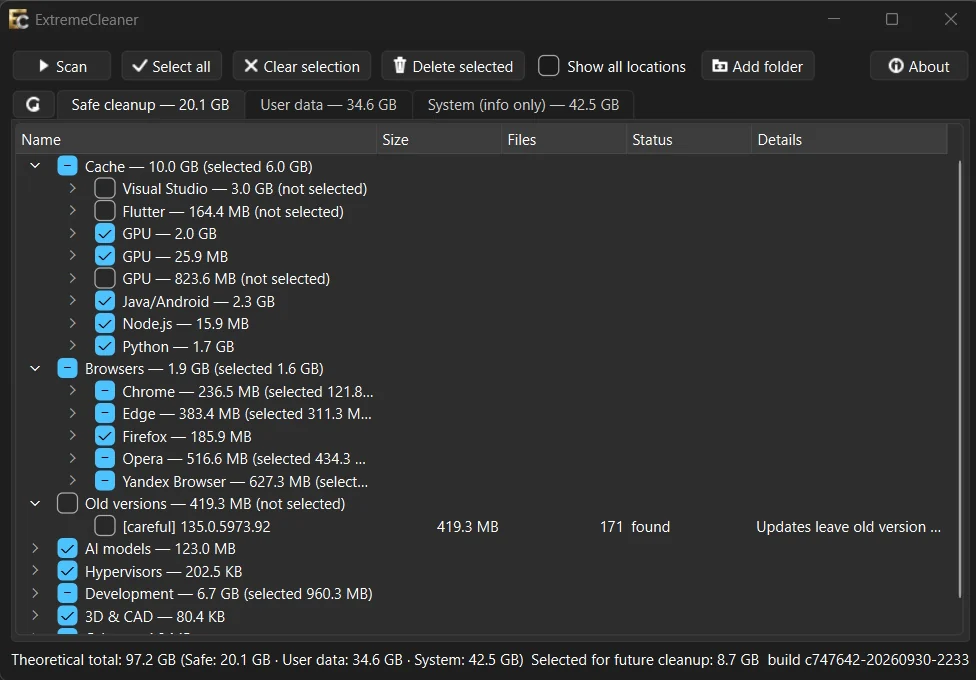
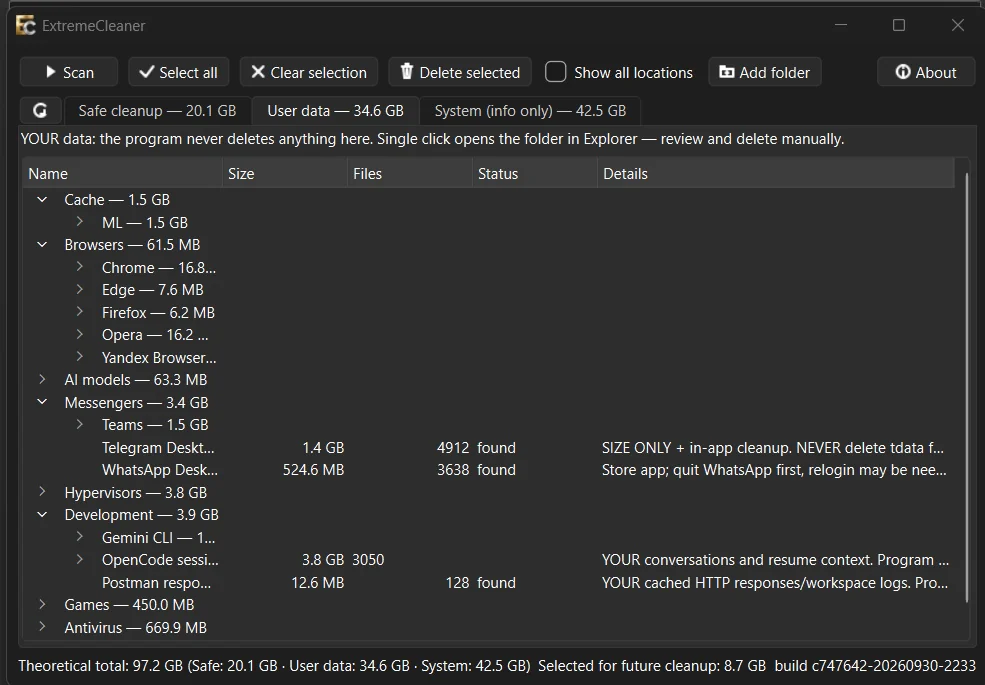
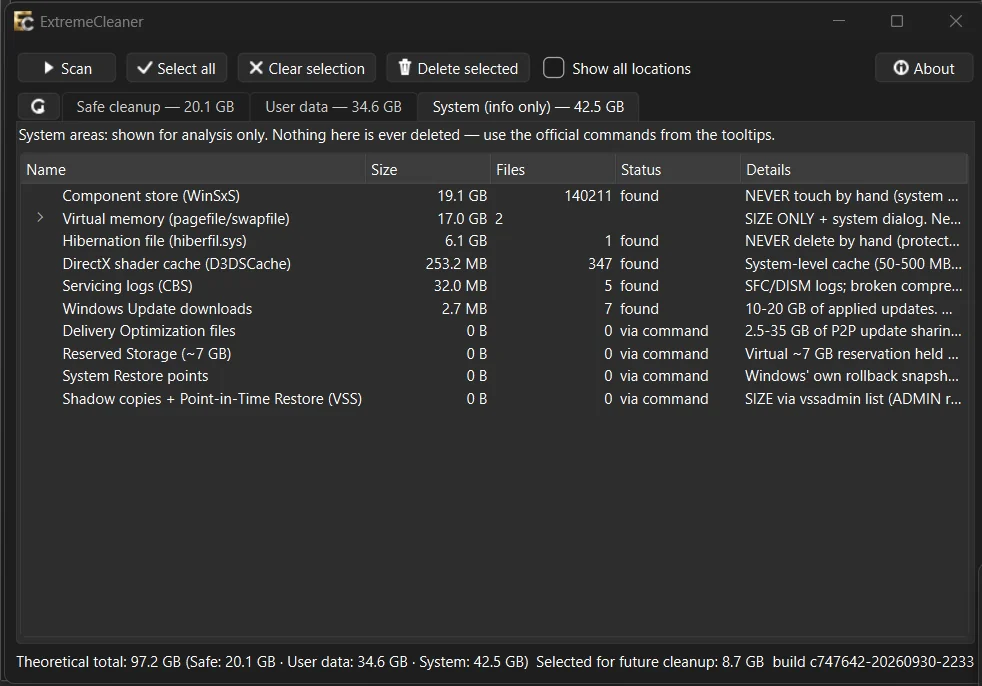

Сотни правил очистки
Браузеры, IDE, dev-кэши, игры, антивирусы, виртуальные машины, модели Scribe и забытые сохранения.
Windows · Очистка диска
Находит забытый кэш и мусор — и объясняет, что это такое.
ExtremeCleaner ищет лишние файлы в браузерах, IDE, dev-инструментах, играх и виртуальных машинах. Показывает размер, расположение и степень риска, а удаляет — только через Корзину Windows.
Портативная сборка, Python не нужен. Права администратора нужны только для автоматических точек восстановления.

Возможности
По документации проекта
Браузеры, IDE, dev-кэши, игры, антивирусы, виртуальные машины, модели Scribe и забытые сохранения.
Safe cleanup удаляет, User data только открывает папки (включая речевые модели Scribe), System показывает размеры без действий.
Кэши и старые версии отправляются в Корзину Windows — их можно восстановить.
Sacred names, запущенные программы и системные области не удаляются без предупреждения.
После очистки видно, что и когда было удалено, — проще разобраться с последствиями.
Добавляйте собственные места для наблюдения и выбирайте, к какой вкладке они относятся.
Интерфейс
Реальные экраны приложения


Безопасность и лицензия
До установки
Перед очисткой создаётся точка восстановления — если хватает прав. Важные файлы защищены, а системные области показаны только для анализа.
Правила опираются на официальную документацию приложений, включая речевые модели Scribe. Код открыт, приложение работает локально и не требует аккаунта.
| Платформа | Windows 10 / 11 (64-bit) |
|---|---|
| Лицензия | MIT |
| Правила | Сотни встроенных + собственные папки |
| Модели Scribe | Вкладка User data: одна строка на модель, только просмотр и открытие папки |
| Загрузка | GitHub Releases и SourceForge |
| Установка | Не требуется, портативная сборка |
| Права администратора | Для автоматических точек восстановления |
| Исходники | github.com/AIgrator/ExtremeCleaner |
GitHub Releases
Windows 10 / 11 · 64-bit · MIT · Без установки
Ещё на Windows
Все программы